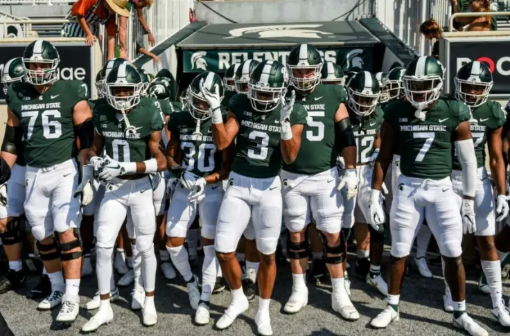
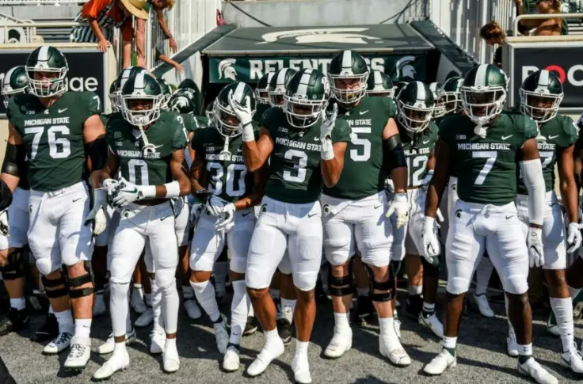
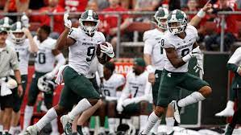

The Michigan State Spartans Travel To Bloomington,Indiana, To Take On The (2-3) Indiana Hooisers This Saturday. KickOff Is Set For 12:00 PM.The Spartans Are Currently (6-0) And Are Ranked #10 In The Nation For College Football. Coach Mel Tucker Plans On Using His High Powered Offense Ran Through Heisman Canadite RunningBack Kenneth Walker And Junior Wide Reciever Jayden Reed. This 6-0 Start For The Spartans Has Been The Best For The Program Since 2015. The Spartans Plan On Continuing Their Domanince And Getting This In Preperation For The Big MatchUp Between The Spartans And Michigan Wolverines. Many People Did Not Expect Such A Great Start For The Spartans This Season But With This Type Of Team The Sky Is The Limit!

Michigan State RunningBack Kenneth Walker III is Currently In 4th Place In the Heisman Race Based On The Odds After Week 7. The Players That Are In Front Of Them Are Bryce Young From Alabama, Matt Corral From Ole Miss, And CJ Stroud From Ohio State. The Heisman Trophy Has Been Known To Be More Of A QB Trophy Based On The Past Decade. Kenneth Walker Has A Very Good Chance Of Being Invited To New York For The Heisman Trophy Presentation. If He Really Wants To Win The Award, He Will Have To Continue To Produce High Numbers For The Reminder Of The Year, Especially Against Big Teams That MSU Will Face Such As Michigan, Penn State, And Ohio State.
| Name | Yards | Touchdowns |
|---|---|---|
| Kenneth Walker | 997 | 9 |
| Jayden Reed | 562 | 5 |
| Payton Thorne | 1,701 | 15 |